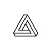
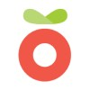

Hi, I'm
Product Designer with 13+ years experience working across research, strategy, and execution to get from ambiguous opportunity to high-impact product.
About me
Most recently shipping AI study products at Course Hero; lifting WAUs by 16%. Before that, 6 years building Shopify’s merchant marketing platform; driving a 52% increase in sales attributed to marketing activity.
Based in the Greater Toronto Area. Outside of work I'm raising a family, scheming up the next home renovation, and trying (with mixed results) to cultivate a green thumb. I love a good book when life slows down enough to allow it.
Where I've worked
 Staff Product Designer, Course Hero
Staff Product Designer, Course Hero
2024–2025 · Toronto (Remote)
 Staff Product Designer, Shopify
Staff Product Designer, Shopify
Product Designer → Senior → Staff · 2017–2023 · Toronto (Hybrid)

Product Designer, Kinetic Commerce 2015–2017 · TorontoUX/UI Designer, Nascent Digital
2013–2015 · Toronto
UX/UI Designer, Grocers Plus 2013–2014 · TorontoWhat I'm good at
0–1 product design and discovery
I own the design vision for the team. At Shopify I started new areas like Email and Automations, handed them to others to run, and kept the most important parts moving, like campaigns and reporting. At Course Hero I built something net new: an AI product for stickiness.
Complex, multi-surface systems at scale
Make deep complexity simple across products. I build from first principles for scale and think through how each decision ripples across the product.
Research synthesis and problem framing
Talking to users is part of my process from the start, through interviews, diary studies and usability testing. I turn that research into frameworks the team can use, and keep sharing them so research keeps shaping the product after discovery.
Cross-functional alignment and facilitation
I work closely with PM, engineering, research and data science, and run design sprints that set strategy and roadmaps. I keep the product cohesive across teams, so users see one product, not the org chart.
How I work
I validate direction before I build.
Painted-door pages, smoke tests and feature surveys show real intent before the team commits.
I turn raw research into shared frameworks.
Mental models that PM, engineering and research can all point back to, not a pile of interview notes.
I build in regular rituals.
Design sprints get teams to decisions, and open "UX roast" critiques keep the work honest between milestones.
I use AI to move faster, from research to shipped code.
I run interview notes through Claude to spot patterns, then check them against the raw notes myself. I prototype in code so feedback is on something that works, and I ship small, contained changes myself.
What's in my toolbelt
Design & Prototyping
Figma · Claude · Adobe Creative Suite · Affinity Creative Suite
Research & Strategy
Design sprints · Value Proposition Design · User Testing (moderated & unmoderated) · KANO surveys
Data & Analytics
Amplitude · Mixpanel · Google Analytics
Collaboration & Delivery
Slack · Google Suite · Confluence · JIRA